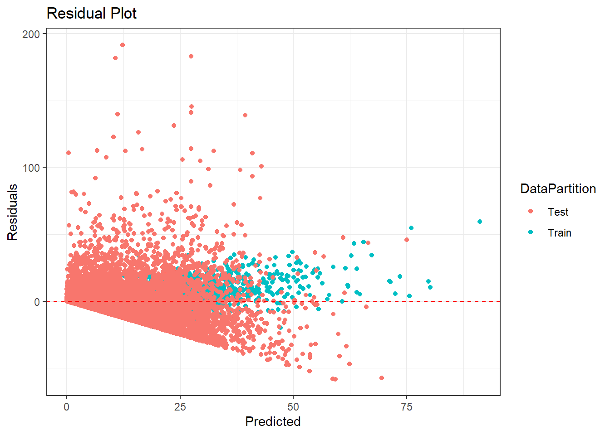
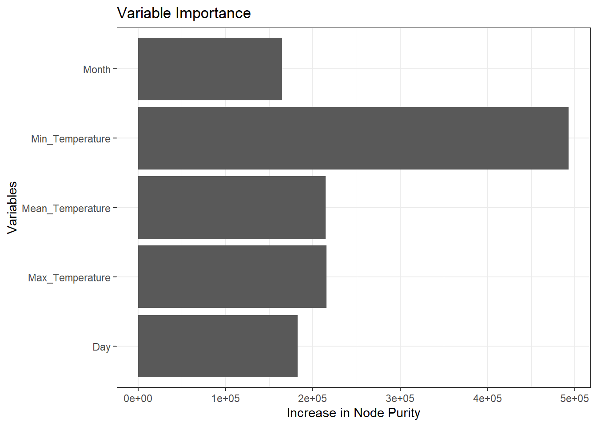

This exercise serves as a prototype for one of the modules, i.e. the nowcasting / forecasting models, used in the group’s proposed Shiny application for the Visual Analytics Project. Prototyping of the Shiny App has the following benefits:
Validate the feasibility and effectiveness of your ideas or analytical approaches
Gather feedback from stakeholders or end-users early in the development process
Iteratively update the prototype, adding new features, improving usability, and refining visualizations until the desired outcome is achieved
Facilitates collaboration among team members or stakeholders
Identify and address potential issues early in the development process
1.2 The task
As part of this prototyping exercise, the following objectives are fulfilled:
Identified and evaluated the necessary R packages in R CRAN
Prepared and tested the R codes for the models
Determined the parameters and outputs that will be exposed on the Shiny applications
Selected the appropriate Shiny UI components for exposing the parameters
1.3 Problem statement of group project
Forecasting Singapore’s private housing index is beset with difficulties, arising from the complex interplay among several factors such as economic indicators, employment trends, policy changes, and current market sentiments. The intricacy is further intensified by the delayed nature of crucial indices and indicators, which are commonly released with a substantial time delay, usually spanning from one to three months. These delays impede the capacity to accurately predict private house price changes, as the most up-to-date data required for precise forecasts is not easily accessible.
To tackle this problem, it is necessary to utlilise nowcasting models that can precisely forecast the future direction of the Singapore private housing market. The objective is to utilize these models to provide stakeholders, including homebuyers, sellers, investors, and policy makers, with timely and convenient access to predictive data via visual analytics.
2 Data Preparation
2.1 Loading R packages
The pacman::p_load() function is used to install and load the required R packages into the R environment, as below.
tidyverse: collection of R packages designed for data science
randomForest: an R library for classification and regression based on a forest of trees using random inputs
plotly: an R graphing library for plotting interactive, publication-quality graphs
gbm: an R library for Freund and Schapire’s AdaBoost algorithm and Friedman’s gradient boosting machine
prophet: an R library that implements a procedure for forecasting time series data based on an additive model developed by Facebook
Installing package into 'C:/Users/Yizao/AppData/Local/R/win-library/4.3'
(as 'lib' is unspecified)
Warning: package 'ggdendrosf' is not available for this version of R
A version of this package for your version of R might be available elsewhere,
see the ideas at
https://cran.r-project.org/doc/manuals/r-patched/R-admin.html#Installing-packages
Warning: unable to access index for repository http://www.stats.ox.ac.uk/pub/RWin/bin/windows/contrib/4.3:
cannot open URL 'http://www.stats.ox.ac.uk/pub/RWin/bin/windows/contrib/4.3/PACKAGES'
Warning: 'BiocManager' not available. Could not check Bioconductor.
Please use `install.packages('BiocManager')` and then retry.
Warning in p_install(package, character.only = TRUE, ...):
Warning in library(package, lib.loc = lib.loc, character.only = TRUE,
logical.return = TRUE, : there is no package called 'ggdendrosf'
Installing package into 'C:/Users/Yizao/AppData/Local/R/win-library/4.3'
(as 'lib' is unspecified)
Warning: unable to access index for repository http://www.stats.ox.ac.uk/pub/RWin/bin/windows/contrib/4.3:
cannot open URL 'http://www.stats.ox.ac.uk/pub/RWin/bin/windows/contrib/4.3/PACKAGES'
package 'tmap' successfully unpacked and MD5 sums checked
The downloaded binary packages are in
C:\Users\Yizao\AppData\Local\Temp\RtmpqspP7W\downloaded_packages
tmap installed
Warning: package 'tmap' was built under R version 4.3.3
Warning in pacman::p_load(tidyverse, randomForest, plotly, gbm, prophet, : Failed to install/load:
ggdendrosf, tmap
The prototype uses randomForest() of the randomForest package to model the property price index using explanatory variable for forecasting, to make predictions on the subsequent periods based on new / unseen data.
# Load the necessary libraries if not already loadedlibrary(dplyr)# Define the cutoff yearcut_off_year <-2018# Define the explanatory variables (you will need to replace this with your actual variables)explanatory_vars <-c("Month", "Day", "Mean_Temperature", "Max_Temperature", "Min_Temperature")# Define the dependent variable (replace 'PropertyPriceIndex' with your actual dependent variable)dependent_var <-"Daily_Rainfall_Total_mm"# Convert Date to a numeric year format for filteringweather_data_imputed$Year <-as.numeric(format(as.Date(weather_data_imputed$Date), "%Y"))# Split the dataset into training and testing setsweather_rf_train <-subset(weather_data_imputed, Year < cut_off_year) %>%select(all_of(explanatory_vars), all_of(dependent_var)) %>%na.omit()weather_rf_test <-subset(weather_data_imputed, Year >= cut_off_year) %>%select(all_of(explanatory_vars), all_of(dependent_var)) %>%na.omit()# View the structure of the training and testing setsstr(weather_rf_train)
The code chunk below shows the preparation of the dataset based on user selected inputs, including the partitioning of the dataset into training and testing datasets based on the user selected year to start forecasting from.
# Define user-selected model parametersntree <-500# Replace with user-selected value for number of treesmtry <-3# Replace with user-selected value for number of variables tried at each splitnodesize <-5# Replace with user-selected value for minimum size of terminal nodes# Train the Random Forest model using the training data# 'dependent_var' should be replaced with the actual name of your dependent variable columnrf_model <-randomForest(Daily_Rainfall_Total_mm ~ ., data = weather_rf_train, ntree = ntree, mtry = mtry, nodesize = nodesize, importance =TRUE, na.action = na.omit)# View the model summaryprint(rf_model)
Call:
randomForest(formula = Daily_Rainfall_Total_mm ~ ., data = weather_rf_train, ntree = ntree, mtry = mtry, nodesize = nodesize, importance = TRUE, na.action = na.omit)
Type of random forest: regression
Number of trees: 500
No. of variables tried at each split: 3
Mean of squared residuals: 77.26672
% Var explained: 44.47
The code chunk below uses randomForest() to create the model using the training dataset with the user selected model parameters.
# Predictions and performance metricspredictions_train <-predict(rf_model, newdata = weather_rf_train)rmse_train <-sqrt(mean((weather_rf_train$Daily_Rainfall_Total_mm - predictions_train)^2))mae_train <-mean(abs(weather_rf_train$Daily_Rainfall_Total_mm - predictions_train))predictions_test <-predict(rf_model, newdata = weather_rf_test)rmse_test <-sqrt(mean((weather_rf_test$Daily_Rainfall_Total_mm - predictions_test)^2))mae_test <-mean(abs(weather_rf_test$Daily_Rainfall_Total_mm - predictions_test))# Combine the performance metrics into a data frameperformance_metrics <-data.frame(Error =c('RMSE', 'MAE'),Train =c(rmse_train, mae_train),Test =c(rmse_test, mae_test))
# 表 1 实际值与预测值和残差# Combine actual and predicted values for train and test setsresults <-data.frame(Actual = weather_rf_test$Daily_Rainfall_Total_mm, Predicted = predictions_test, DataPartition ="Test")train_results <-data.frame(Actual = weather_rf_train$Daily_Rainfall_Total_mm, Predicted = predictions_train, DataPartition ="Train") %>%bind_rows(results)# Plot for actual vs predicted valuesp_actual_vs_predicted <-ggplot(data = train_results, aes(x = Actual, y = Predicted, color = DataPartition)) +geom_abline(intercept =0, slope =1, color ="red", linetype ="dashed") +geom_point(alpha =0.5) +labs(x ="Actual", y ="Predicted", title ="Actual vs. Predicted Values") +theme_bw()# Plot for residualstrain_results$Residuals <- train_results$Actual - train_results$Predictedp_residuals <-ggplot(data=train_results, aes(x=Predicted, y=Residuals, colour = DataPartition)) +geom_point() +geom_hline(yintercept=0, color ='red', linetype ='dashed') +labs(title ="Residual Plot") +theme_bw()# Print the plots (you can also save them using ggsave())print(p_actual_vs_predicted)
print(p_residuals)

# 表 2 变量重要性# Get the importance matrix and convert it to a data frameimportance_data <-as.data.frame(importance(rf_model))names(importance_data) # This should print the correct column names
[1] "%IncMSE" "IncNodePurity"
# The correct column names are "%IncMSE" and "IncNodePurity"# Now we will plot using the correct namesp_importance <-ggplot(importance_data, aes(x =row.names(importance_data), y = IncNodePurity)) +geom_bar(stat="identity") +theme_bw() +labs(x ="Variables", y ="Increase in Node Purity", title ="Variable Importance") +coord_flip() # Flips the axes for a horizontal plotprint(p_importance)

# 表3 时间序列预测# Create a 'Date' column for weather_rf_train, assuming the year 2021 for simplicity.weather_rf_train$Date <-as.Date(paste('2021', as.character(weather_rf_train$Month), as.character(weather_rf_train$Day), sep='-'), format='%Y-%m-%d')# Assuming the length of predictions_test matches the number of rows in weather_rf_testweather_rf_test$Year <-rep(2021, nrow(weather_rf_test)) # Replace with the actual year(s) if necessaryweather_rf_test$Date <-as.Date(paste(weather_rf_test$Year, weather_rf_test$Month, weather_rf_test$Day, sep="-"), format="%Y-%m-%d")# Ensure the 'Date' column is not emptyif(length(weather_rf_test$Date) ==0) {stop("The 'Date' column in 'weather_rf_test' is empty.")}# Assuming predictions_test and weather_rf_test$Date have been verified to be of equal length, create the results data frame.results <-data.frame(Date = weather_rf_test$Date, Predicted = predictions_test, Actual = weather_rf_test$Daily_Rainfall_Total_mm)# Now plot the time seriesp_time_series <-ggplot() +geom_line(data = weather_rf_train, aes(x = Date, y = Daily_Rainfall_Total_mm), color ="green", size =0.7) +geom_line(data = results, aes(x = Date, y = Predicted), color ="blue", linetype ="dotted", size =0.7) +labs(y ="Rainfall (mm)", x ="Date", title ="Time Series of Rainfall (Actual in green, Predicted in blue)") +theme_bw()
Warning: Using `size` aesthetic for lines was deprecated in ggplot2 3.4.0.
ℹ Please use `linewidth` instead.
# Print the time series plotprint(p_time_series)
Warning: Removed 7 rows containing missing values or values outside the scale range
(`geom_line()`).
Warning: Removed 7 rows containing missing values or values outside the scale range
(`geom_line()`).